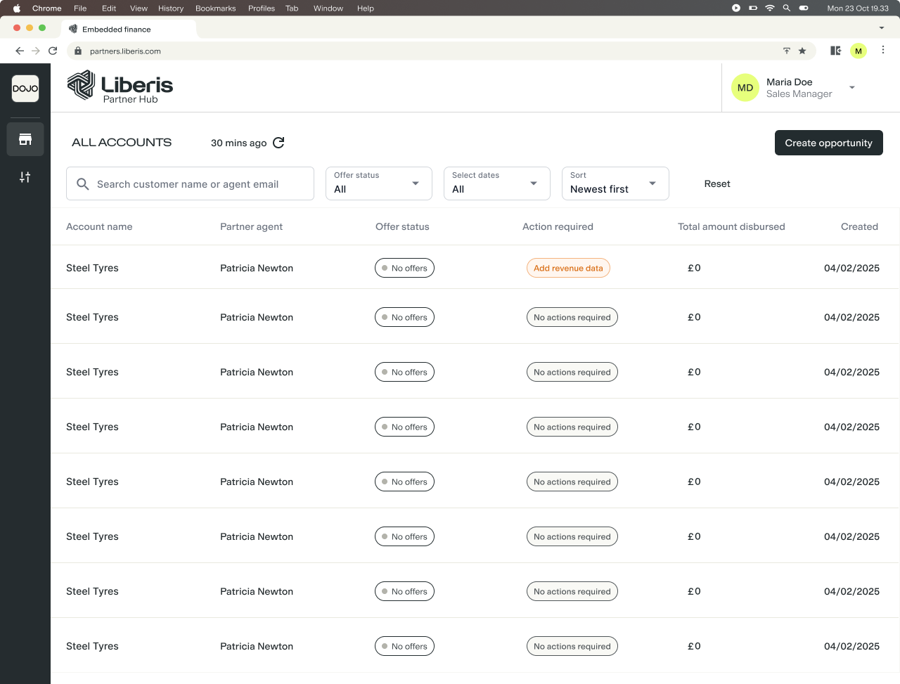

Evolving Partner Hub across multiple releases so partner agents could understand merchant status, recover incomplete journeys and take the right next action.
Role
Product Designer
Scope
Journey mapping, workflow design, UX/UI, responsive design and delivery
Timeline
2025–2026 · Shipped across multiple releases
The problem
Partner Hub supported more products and more non-linear journeys, but the account panel did not always answer the questions agents needed most: what is happening, what is blocking progress and what should I do next?
The process
I mapped where journeys paused, what Partner Hub knew at each point, who needed to act and what an agent needed to see on returning. This reframed separate feature requests as one connected progress system.
The solution
The dashboard and account panel evolved into an operational work surface. Actions were separated into Required when progress was blocked and Optional when extra information could strengthen or accelerate an application.
Requiredness belongs to the current journey state, not to the action itself.
The outcome
Agents gained clearer recovery routes for incomplete journeys, better visibility of accounts needing attention and direct ways to provide evidence or revenue data. The work established a reusable foundation for future Partner Hub workflows.
A multi-release case study about moving Partner Hub from displaying application information to helping partner agents understand and progress the work.
Role
Product Designer
Platform
Liberis Partner Hub · BCA and Capital/Flex workflows
Status
Shipped across multiple releases · 2025–2026
01 · THE STARTING POINT
Partner Hub had grown feature by feature
The original account side panel contained useful application details, but it was largely passive. Agents could see what the system knew without always knowing what they should do.
The challenge wasn't simply displaying application status. It was helping agents understand how to move the merchant forward.
The earlier BCA dashboard surfaced status but offered limited guidance.
The original panel brought information together without a clear next step.02 · SYSTEM MAPPING
Understanding where journeys could pause
I mapped the drop-off states rather than designing only the successful path. At every point I asked what had happened, why the merchant had not progressed, what information the system held, who needed to act and what the agent should see on return.
Partner agentStart journeySend linkReturn and act
Partner HubRecord stateShow progressSurface next action
MerchantComplete Open Banking
Liberis + systemAssess evidenceUpdate state
The agent was always the Partner Hub user, but they were not always responsible for the next step. Sometimes the correct action was to wait.
03 · EVOLUTION
A status wasn't enough
“Revenue data missing” describes a problem. A useful workflow explains why it matters, what the agent can do, who completes the next step and what changes afterwards.
01Information onlyUseful detail, no clear next step
02HighlightsMore visible, but too passive
03Action requiredUrgency became clear
04Required + OptionalPriority reflects journey state
Highlights improved visibility but sounded informational.
The final hierarchy distinguished blockers from supporting actions.04 · RECOVERY
Making incomplete Flex journeys recoverable
When revenue information was missing, the dashboard could surface “Add revenue data” instead of leaving the account at “No offers”. After an Open Banking link was sent, the state changed to “Open Banking in progress” with zero required actions. If new information showed that another processor was needed, Partner Hub surfaced that new action.
As the merchant state changes, the relevant next action changes too.05 · CORE PRINCIPLE
Required or optional depended on the journey
FLEX ASSESSMENT
Open Banking
Required
Reliable revenue data is needed before the assessment can progress.
AFTER A REFERRAL
Open Banking
Optional
The application can progress, but better evidence may help Liberis review it faster.
The action itself didn't determine its priority. Its role in the current journey did.
06 · REFERRAL EVIDENCE
Encouraging useful behaviour without implying the application was stuck
Once a referral was submitted, supporting documents and Open Banking could strengthen the application but were not needed for it to exist. The confirmation and later account view therefore kept both actions clearly optional.
The lead is submitted before optional evidence is introduced.
The same priority remains visible when the agent returns.07 · REUSABLE MODEL
From individual features to a connected system
StatusWhat happened?BlockerIs progress stopped?OwnerWho acts next?ActionWhat can they do?PriorityRequired or optional?ResolutionWhat changes?
The reusable part wasn't one card component. It was the relationship between state, priority and action.
08 · TRIAGE
Supporting work across the dashboard
The dashboard answered “Which accounts need my attention?” The account panel answered “Why does this account need attention, and what can I do about it?” Together they created a simple sequence: scan → prioritise → understand → act.

A related Capital Platform pattern brought actionable accounts into dashboard-level triage.09 · OUTCOME
Making progress easier to understand and recover
Across multiple releases, the work created clearer routes for incomplete Flex journeys, distinguished genuinely blocking work from supporting actions, and gave agents more direct ways to provide evidence and revenue information.
COMMERCIAL INTENT
By making previously stalled journeys visible and recoverable, the work was designed to reduce avoidable drop-off and support more merchants towards funding.
10 · REFLECTION
Designing the work, not just the interface
The hardest part wasn't the individual components. It was understanding how application states, merchant behaviour, partner-agent actions and Liberis processes connected - and deciding what Partner Hub should communicate at each point.
I wasn't designing a dashboard. I was designing how work moves through the dashboard.
With more time, I'd continue applying the final action model across the remaining Flex states so the same principles are used consistently across Partner Hub.